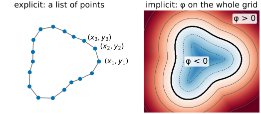
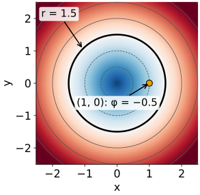
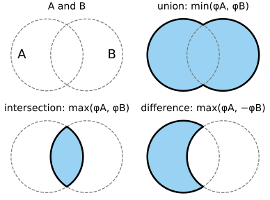
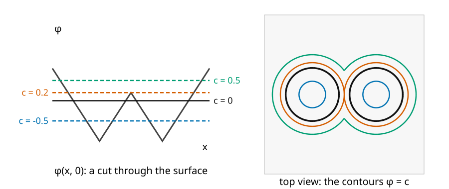
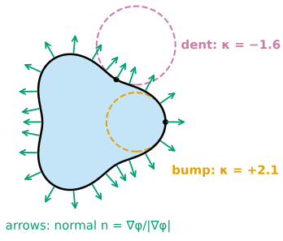
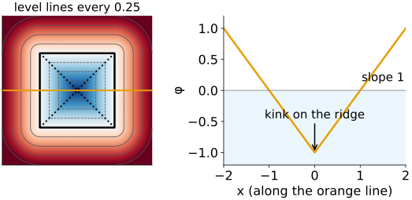
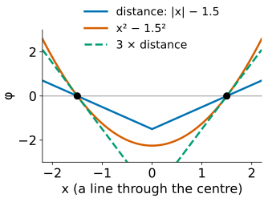
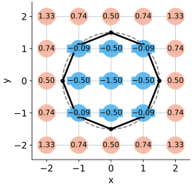

A snake stores a boundary as a list of points. Today we store it in a completely different way: as the place where a function on the image grid is zero. This is the starting point of level set methods (Osher & Sethian, 1988).
Two ways to store a curve: explicit (points) and implicit (the zero level of \phi(x, y)).
Inside and outside from the sign; union and intersection with min and max.
Topology belongs to the slice, not to the function: one contour can become two.
Normal and curvature read directly from \phi.
The signed distance function: the most convenient \phi.
On a pixel grid, \phi is just an image.
Slides titled The math give the formulas and proofs; the ideas are complete without them.
Explicit: a list of points (x_1, y_1), (x_2, y_2), \dots along the curve, or a parametric curve \mathbf C(s). This is a snake.
Easy to draw, easy to measure the length.
But: one list is one curve. Two objects need two lists; a curve that splits needs surgery.
Implicit: a function \phi(x, y) on the whole image, and the curve is where \phi = 0.
Think of a height map: the coastline is the zero level of the height. The map stores heights everywhere; the coast is read off where the height crosses sea level.
We fix the sign once: \phi < 0inside, \phi > 0 outside.

Same coast, two descriptions. Raise the sea level and the coastline moves, and islands may appear or merge, without anyone redrawing the coast by hand.
Curves from formulas
curve
\phi(x, y)
inside (\phi < 0)
line
a x + b y - c
one half-plane
circle, radius r
\sqrt{x^2 + y^2} - r
the disk
ellipse
(x/a)^2 + (y/b)^2 - 1
the filled ellipse
To test whether a point is inside, evaluate \phi there and look at the sign. No search along a list of points.
The circle: at (1, 0) with r = 1.5, \phi = 1 - 1.5 = -0.5: inside, and half a unit from the edge.
Many functions have the same zero set: x^2 + y^2 - r^2 also describes the circle. They differ away from the curve.

Set operations for free
With \phi_1 and \phi_2 for two shapes (negative inside):
union (inside either): \min(\phi_1, \phi_2);
intersection (inside both): \max(\phi_1, \phi_2);
complement (swap inside and outside): -\phi;
difference A \setminus B: \max(\phi_1, -\phi_2).
Two circles of radius 1 centred at (\pm 1.2, 0): \phi = \min\big(\sqrt{(x - 1.2)^2 + y^2} - 1,\ \sqrt{(x + 1.2)^2 + y^2} - 1\big). At the origin \phi = 0.2: outside both, in the gap between them.

Topology is a property of the slice

Cut the surface z = \phi(x, y) of the two circles with horizontal planes z = c. Below c = 0.2 the cut is two curves, above it one. The function did not change at all; only the height of the cut did.
Try it: slicing a surface
Normal and curvature, read from φ
The gradient\nabla\phi points uphill, from inside to outside, and is perpendicular to the level line. So the outward normal is \mathbf n = \nabla\phi / |\nabla\phi|.
Curvature\kappa: how fast the normals spread out as you move along the curve. A circle of radius r has \kappa = 1/r: small circles bend a lot, a straight line has \kappa = 0.
With our sign convention, \kappa > 0 where the inside is convex (a bump), \kappa < 0 in a dent.
Both come from \phi at one point, with derivatives: no neighbours along a list of points are needed.

The math: normal and curvature
Normal. Along a level line \phi(\mathbf C(s)) = c. Differentiate with the chain rule: \nabla\phi \cdot \mathbf C'(s) = 0. The gradient is perpendicular to the tangent, so \mathbf n = \nabla\phi/|\nabla\phi| (pointing to larger \phi, outward).
Curvature is the divergence of the unit normal field, \nabla\cdot\mathbf v = \partial_x v_1 + \partial_y v_2 (“how much the arrows spread out”): \kappa = \nabla\cdot\frac{\nabla\phi}{|\nabla\phi|} = \frac{\phi_{xx}\phi_y^2 - 2\phi_x\phi_y\phi_{xy} + \phi_{yy}\phi_x^2}{(\phi_x^2 + \phi_y^2)^{3/2}}.
Circle.\phi = \sqrt{x^2 + y^2} - r, \rho = \sqrt{x^2 + y^2}: \nabla\phi = (x, y)/\rho, so \mathbf n = (x, y)/\rho and \nabla\cdot\mathbf n = \partial_x(x/\rho) + \partial_y(y/\rho) = \tfrac{y^2}{\rho^3} + \tfrac{x^2}{\rho^3} = \tfrac{1}{\rho}. On the curve, \kappa = 1/r.
Signed distance functions
The most convenient \phi: |\phi(\mathbf x)| = the distance from \mathbf x to the curve, with a minus sign inside.
It is the distance transform of the morphology day, with a sign: distance to the boundary, negative inside the object.
Walking straight away from the curve, \phi grows by exactly 1 per unit: |\nabla\phi| = 1 everywhere (except on the “ridge” in the middle of a shape, where two nearest points compete).
Then the normal is simply \mathbf n = \nabla\phi, and the curvature is the Laplacian, \kappa = \phi_{xx} + \phi_{yy}: the Laplacian kernel of Filtering & convolution.
And \phi tells you how far away the curve is, which unit 2 will use to keep time steps safe.

The math: why |∇φ| = 1 simplifies everything
If |\nabla\phi| = 1, then \mathbf n = \nabla\phi and \kappa = \nabla\cdot\nabla\phi = \nabla^2\phi.
Not every \phi with the right zero set is a distance. For the circle, \phi = x^2 + y^2 - r^2 has \nabla\phi = 2(x, y), so |\nabla\phi| = 2\rho: 3 on the curve if r = 1.5. Its normal and the curvature of its level lines are still correct (they do not depend on the scaling), but \nabla^2\phi = 4 everywhere: the Laplacian shortcut is wrong.
Scaling \phi by 3 changes nothing about the curve, \mathbf n or \kappa; it triples |\nabla\phi|. Distances read from \phi would be off by a factor 3.
At corners the signed distance has kinks (inside a square, along the diagonals): there \phi is not differentiable and finite differences give a huge \kappa.

Try it: same curve, different φ
On a pixel grid, φ is an image
Store \phi at the pixel centres: an image of the same size as the data, with negative values inside.
Inside/outside of a pixel: the sign. Derivatives: differences of neighbours (Filtering & convolution).
The curve itself lies between pixels: on every pixel edge where the sign changes, interpolate linearly to find the crossing, and join the crossings cell by cell. This is marching squares; the case table, the ambiguous saddle cells and the by-hand work belong to the marching-cubes day (level sets and marching squares).
Every contour drawn in today’s demos is computed this way.

A 5 × 5 example
Sample \phi = \sqrt{x^2 + y^2} - 1.5 at x, y \in \{-2, \dots, 2\} (rounded):
y \backslash x
−2
−1
0
1
2
2
1.33
0.74
0.50
0.74
1.33
1
0.74
−0.09
−0.50
−0.09
0.74
0
0.50
−0.50
−1.50
−0.50
0.50
−1
0.74
−0.09
−0.50
−0.09
0.74
−2
1.33
0.74
0.50
0.74
1.33
9 pixels inside (negative). At (1, 0), central differences: \phi_x = (0.5 - (-1.5))/2 = 1, \phi_y = 0: normal (1, 0), exact.
Curvature there: \phi_{yy} = -0.09 - 2(-0.5) - 0.09 = 0.83, so \kappa \approx 0.83; the exact value is 1/\rho = 1. A coarse grid underestimates the bending of a small circle.
Summary
Implicit curve: the zero level of \phi on the image grid; \phi < 0 inside.
Union = min, intersection = max, complement = -\phi.
Topology is a property of the slice: as \phi or the cutting level changes, contours split and merge by themselves.
Normal\nabla\phi/|\nabla\phi| and curvature\nabla\cdot(\nabla\phi/|\nabla\phi|) from local derivatives; a circle has \kappa = 1/r.
Signed distance: |\nabla\phi| = 1, \mathbf n = \nabla\phi, \kappa = \nabla^2\phi; many other \phi share the same zero set.
On the grid, \phi is an image and the curve is found by marching squares.